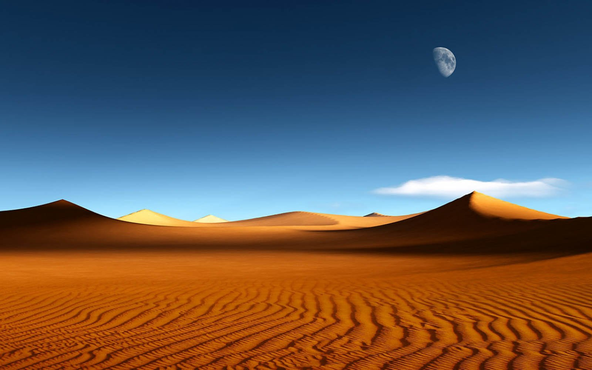
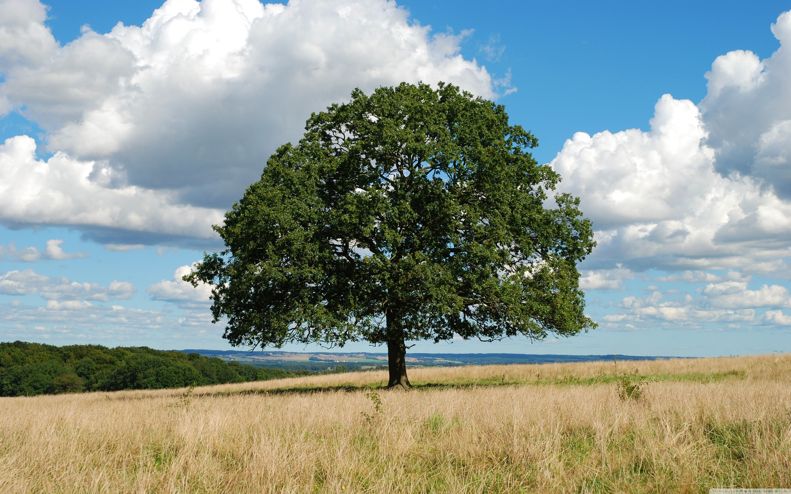
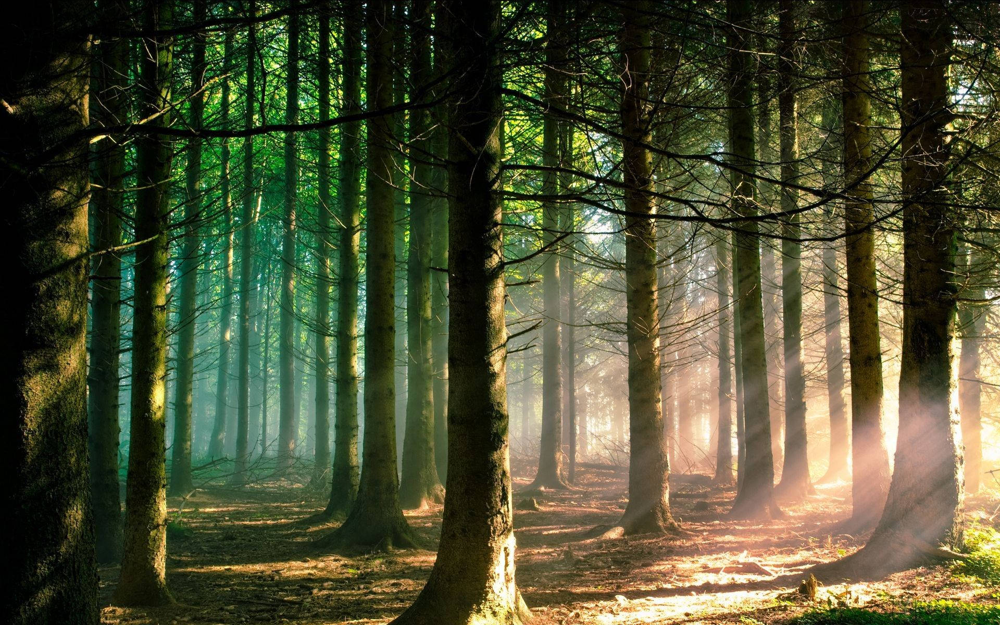

خانه
اهداف ما
درباره ما
تماس با ما
کـــــویر
کسفر به کویرهای ایران، یکی از زوایای طبیعت گردی محسوب می شود، با این حال اغلب مردم تصور می کنند طبیعت گردی به معنای گشت و گذار در مناظر سرسبز و درختان انبوه است.



top